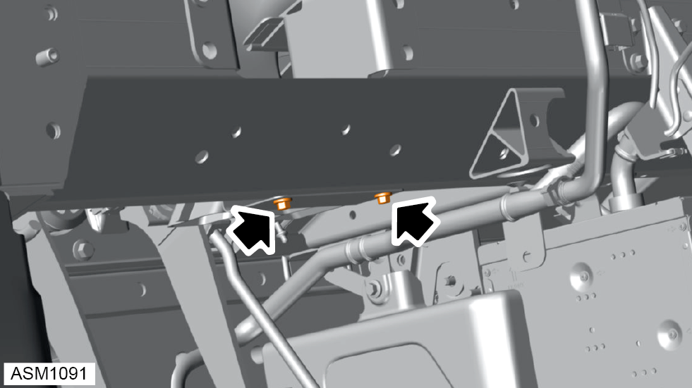
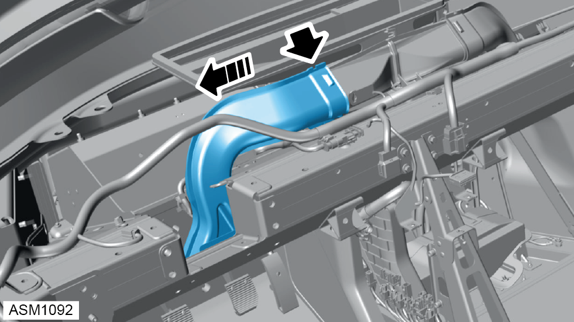
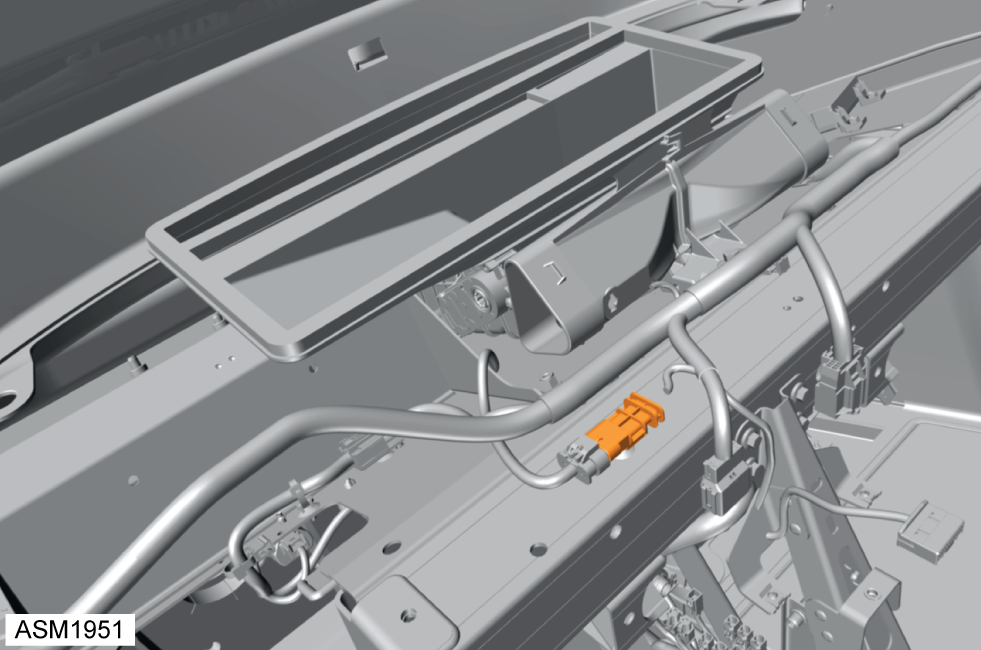
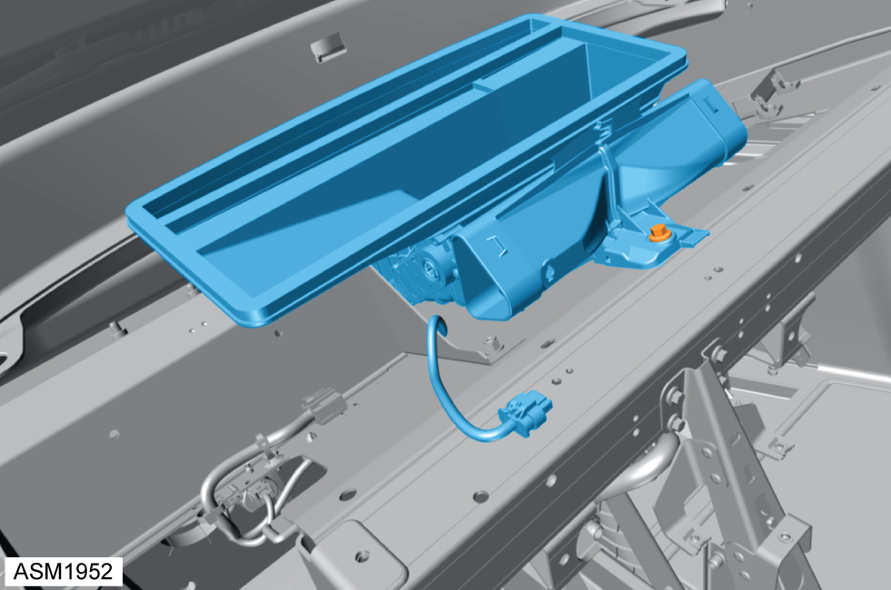
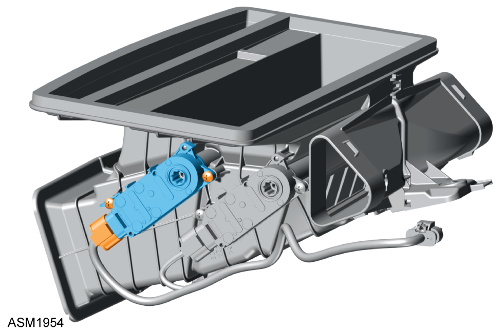

Actuator - Demist / Defog
Print
Operation Code: 18.12.03-02
Removal
- Remove instrument panel assembly. Refer to procedure.

- Remove M5x12 bolts (x2) securing left side foot duct to underbody assembly. Torque 5 Nm.

- Disengage left side foot duct from air distribution unit.
- Remove left side foot duct from air distribution unit.
- Repeat steps 3 through 4 for right side foot duct.

- Disengage harness connector from air distribution unit.

- Remove M8x25 bolt securing air distribution unit to underbody assembly. Torque 18 Nm.
- Remove air distribution unit.

- Disengage harness connector from demist/defog actuator.
- Remove screws (x2) securing demist/defog actuator to air distribution unit.
- Remove demist/defog actuator.
Installation
- Installation is the reverse of removal procedure except for the following:
- After installation perform a diagnostic read and clear error memory using Lotus Insight tool.